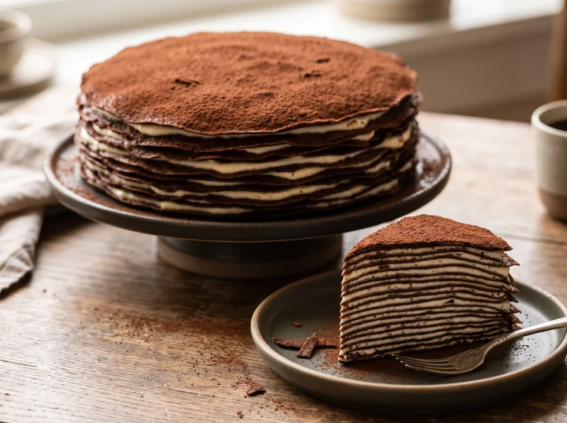

Десерты · 35 минут
Шоколадно-овсяный блинный ПП-торт
Нежнейший многослойный блинный торт из перемолотых овсяных хлопьев, какао и молока 2,5% без сахара и пшеничной муки. Три версии: классическая из видео (120 ккал/100 г), PRO-версия ровно на 1 стандартную порцию (30 г) протеина «Первый Русский Протеин» (109 ккал/100 г, 81,4 г белка) и Ультра-PRO версия (30 г в блины + 15 г в крем = 93,4 г белка).
К ингредиентам
Ингредиенты · 4 порций
- Белковые шоколадно-овсяные блинчики (без масла)
- Овсяные хлопья долгого приготовления (перемолоть в муку) — 60 г
- Протеин КСБ-80 «Первый Русский Протеин» без вкуса (430 ккал | Б 80 | Ж 9 | У 7) — 30 г (1 порция)
- Молоко 2,5% (54 ккал | Б 2,9 | Ж 2,5 | У 4,8) — 300 мл (~300 г)
- Яйцо куриное С0 (целое) — 1 шт. (~60 г)
- Жидкий яичный белок (или белки от 3 яиц — убираем лишние желтки) — 100 г (~3 белка)
- Какао-порошок натуральный (без сахара) — 8 г (в тесто и на посыпку)
- Разрыхлитель и сахарозаменитель — 2 г + по вкусу
- Творожно-заварной крем «Дипломат» на молоке 2,5%
- Молоко 2,5% (54 ккал | Б 2,9 | Ж 2,5 | У 4,8) — 150 мл (~150 г)
- Яичный белок (вместо целого яйца — 0 г жира) — 35 г (1 белок)
- Кукурузный крахмал — 8 г (1 ст. л. с горкой)
- Творог мягкий «Савушкин» 0,1% (вводится после снятия с огня) — 125 г (1 баночка)
- Сахарозаменитель, ванилин и щепотка соли — по вкусу
Пищевая ценность
На 100 г: 109 ккал · Б 10.4 г · Ж 3.3 г · У 9.1 г
Шаг за шагом
Тесто ровно на 1 стандартную порцию (30 г) протеина и молоке 2,5% (10 минут)
Берём ровно 1 стандартную порцию (30 г) сывороточного концентрата «Первый Русский Протеин» (129 ккал, 24 г белка, 2,7 г жиров и 2,1 г углеводов по этикетке). Взбейте 1 целое яйцо С0 и 100 г яичного белка с сахарозаменителем и 150 мл молока 2,5%. Всыпьте перемолотую в муку овсянку (60 г), порцию протеина (30 г — при желании можно всыпать 20 г в тесто, а 10 г оставить из этой же ложки в крем), какао (6 г) и разрыхлитель (2 г). Влейте оставшиеся 150 мл молока 2,5%, размешайте венчиком и оставьте на 10–12 минут.
Выпечка эластичных белковых блинчиков на сухой сковороде (12 минут)
Выпекайте тонкие блинчики на разогретой антипригарной сковороде без капли масла на среднем огне (по 45–60 секунд с первой стороны и 20–30 секунд со второй). На молоке 2,5% блинчики получаются особенно нежными, сливочными и не рвутся при переворачивании.
Творожно-заварной крем «Дипломат» с «Савушкин» 0,1% (6 минут)
В сотейнике смешайте 150 мл молока 2,5%, 1 яичный белок (35 г), 8 г кукурузного крахмала, сахарозаменитель и ванилин, заварите на слабом огне 3 минуты при помешивании венчиком до загустения. Снимите с плиты, дайте остыть 3 минуты и вмешайте венчиком баночку мягкого творога «Савушкин» 0,1% (125 г) — получится густой пломбирный крем.
Сборка торта и подача
Смажьте каждый блинчик густым кремом и присыпьте верхушку оставшимся какао (2 г) через ситечко. При той же калорийности, что у оригинала (851 ккал на весь торт), белка здесь почти в 2 раза больше — 81,4 г (на 100 г: 109 ккал, 10,4 г белка, 3,3 г жира и 9,1 г углеводов)!
Другие варианты
2. PRO-версия на молоке 2,5%: ровно 1 порция (30 г) «Первый Русский Протеин» + творожный заварной крем (81,4 г белка)
- Овсяные хлопья долгого приготовления (перемолоть в муку) — 60 г
- Протеин КСБ-80 «Первый Русский Протеин» без вкуса (430 ккал | Б 80 | Ж 9 | У 7) — 30 г (1 порция)
- Молоко 2,5% (54 ккал | Б 2,9 | Ж 2,5 | У 4,8) — 300 мл (~300 г)
- Яйцо куриное С0 (целое) — 1 шт. (~60 г)
- Жидкий яичный белок (или белки от 3 яиц — убираем лишние желтки) — 100 г (~3 белка)
- Какао-порошок натуральный (без сахара) — 8 г (в тесто и на посыпку)
- Разрыхлитель и сахарозаменитель — 2 г + по вкусу
- Молоко 2,5% (54 ккал | Б 2,9 | Ж 2,5 | У 4,8) — 150 мл (~150 г)
- Яичный белок (вместо целого яйца — 0 г жира) — 35 г (1 белок)
- Кукурузный крахмал — 8 г (1 ст. л. с горкой)
- Творог мягкий «Савушкин» 0,1% (вводится после снятия с огня) — 125 г (1 баночка)
- Сахарозаменитель, ванилин и щепотка соли — по вкусу
3. Ультра-PRO на молоке 2,5% (1,5 порции протеина: 30 г в блинчики + 15 г в крем = 93,4 г белка!)
- Овсяные хлопья долгого приготовления (перемолоть в муку) — 60 г
- Протеин КСБ-80 «Первый Русский Протеин» без вкуса (430 ккал | Б 80 | Ж 9 | У 7) — 30 г (1 порция в тесто)
- Молоко 2,5% (54 ккал | Б 2,9 | Ж 2,5 | У 4,8) — 300 мл (~300 г)
- Яйцо куриное С0 (целое) — 1 шт. (~60 г)
- Жидкий яичный белок — 100 г (~3 белка)
- Какао-порошок натуральный (без сахара) — 8 г
- Разрыхлитель и сахарозаменитель — 2 г + по вкусу
- Молоко 2,5% (54 ккал | Б 2,9 | Ж 2,5 | У 4,8) — 150 мл (~150 г)
- Яичный белок — 35 г (1 белок)
- Кукурузный крахмал — 8 г (1 ст. л. с горкой)
- Творог мягкий «Савушкин» 0,1% (после снятия с огня) — 125 г (1 баночка)
- Протеин КСБ-80 «Первый Русский Протеин» без вкуса (в крем) — 15 г (1/2 порции)
- Сахарозаменитель, ванилин и щепотка соли — по вкусу